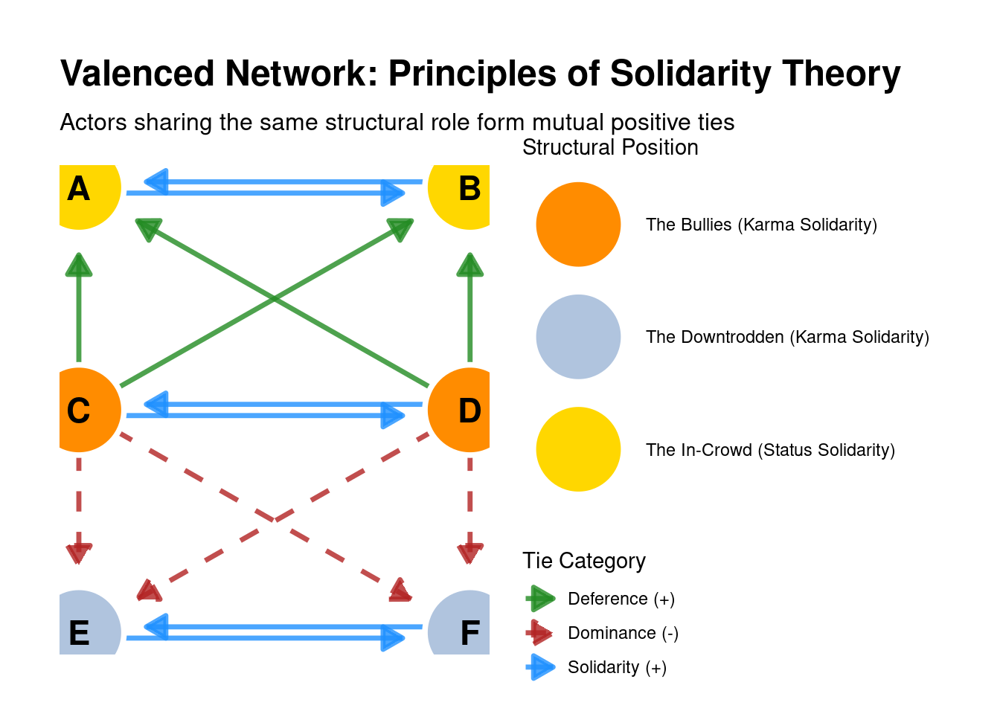
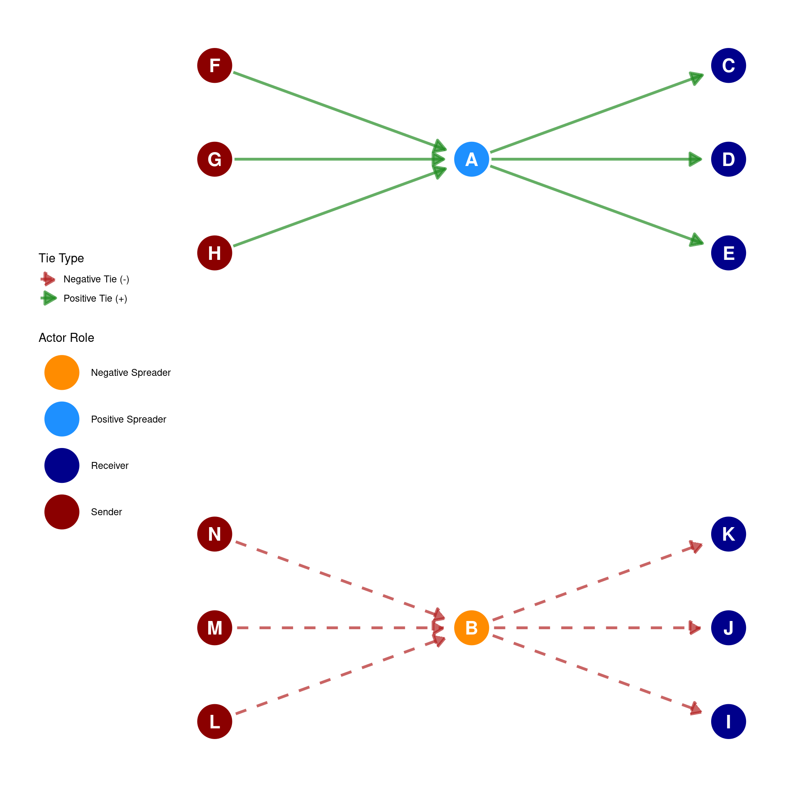

43 Theories of Valenced Interactions
In the study of social networks, understanding how positive and negative relationships manifest and influence network structure is crucial. These relationships are often referred to as valenced interactions or valenced ties. The idea of valence in a tie refers to a tie property, mainly that a particular link can be either positive or negative.
As we saw in Chapter 42, a network incorporating these positive and negative sentiments can be represented using a signed graph featuring distinct sets of positive and negative links. For instance, “liking,” “hating,” “admiring,” “loving,” “bullying,” and “fighting” are examples of interpersonal sentiments and interactions that represent valenced ties within an ego network. Liking, admiring, and loving are examples of ties with positive valence, while hating, bullying, and fighting are examples of ties with negative valence. Network analysts have developed several specific theories aiming to explain how individuals form and manage these valenced interactions in social networks.
Karma Theory, Status Theory, and Solidarity Theory are social psychological theories that aim to explain expected patterns of relationships within sentiment networks. These theories build upon the broader concept of Balance Theory, which was first described by Fritz Heider (1946) and posits that people are motivated to seek balance in their triadic social configurations (see Chapter 41). They predict how an individual might form sentiments towards another person based on the existing sentiment relations between that alter and other members of the network.
Heider, Fritz. 1946. “Attitudes and Cognitive Organization.” The Journal of Psychology 21 (1): 107–12.
43.1 Karma Theory
Karma Theory’s central idea is “You get what you spread out!”. It proposes that individuals tend to reciprocate the feelings or sentiments that someone sends out towards others. If an individual exhibits negative behavior or rudeness without clear provocation, others are likely to respond with negativity towards them. Conversely, if someone is kind and positive towards others, they are likely to receive positive sentiments in return. This theory specifically predicts valenced “indegree” (the sentiments one receives) based on valenced “outdegree” (the sentiments one sends out). The common expressions “bullies get bullied” and “likers get liked” illustrate this principle, indicating that the sentiments an individual expresses towards others tend to be returned to them.

Examples:
- If S is described as a rude person, Karma Theory predicts that you would feel negatively towards him, as their outward negative valences are reciprocated.
- If M is a friendly person who is consistently nice to everyone, Karma Theory predicts that you would like him, mirroring the positive valences he sends out.
43.2 Status Theory
Status Theory suggests that people’s sentiments towards an alter are heavily influenced by how others in the network feel towards that same alter. It can be considered an extension of the triadic balance theory we discussed in Chapter 41.
A fundamental principle of status theory is that individuals tend to mimic or align their sentiments with those that others send towards a potential alter. If someone is liked by many in the network, you are more likely to like them too. This alignment can stem from a psychological desire for balance, to avoid conflict with existing relationships, or from the assumption that others might possess more information about the alter. Accordingly, a node’s status in valenced networks is determined by the sign of the ties it receives, according to the following principles:
- High status is associated with receiving many incoming positive ties.
- Low status is associated with receiving many incoming negative ties.
- A directed positive tie from ego to alter suggests that ego considers alter to have higher status.
- A directed negative tie from ego to alter suggests that ego considers alter to have lower status.
In the same way, the sign of the directed ties you send to others impacts your own status, according to the following principles:
- Positive ties to high-status individuals increase one’s status.
- Positive ties to low-status individuals decrease one’s status.
- Negative ties to high-status individuals decrease one’s status.
- Negative ties to low-status individuals increase one’s status.
Status theory posits that individuals generally strive to avoid losing status and actively seek ways to boost it. This leads to the following observable patterns:
- High-status individuals tend to accumulate positive ties, illustrating a “rich get richer” effect.
- Low-status individuals may accumulate negative ties, described as a “gang up” effect.
- Over time, high-status individuals tend to lose negative ties, while low-status individuals tend to lose positive ties.
Examples:
- If everyone likes Aruna (and thus Aruna is a high status actor in the network), Status Theory predicts that you would also like Aruna, as you would align your sentiment with the positive valences she receives from others, while boosting your own status.
- If B is not liked by anyone (and thus B is a low status actor in the network), Status Theory predicts that you would also decide not to like B, aligning your sentiment with the existing negative sentiment in the network, thus also boosting your own status.
- If C enters a new setting and forms a positive bond with M who is disliked by many others (and is thus low status), C is predicted to withdraw the positive tie to M.
- If W enters a new setting and forms a negative impression of X who is liked by many others (and is thus highg status), W is predicted to over time become more positive toward X.
43.3 Solidarity Theory
Solidarity Theory posits that individuals feel positively towards others who are similarly socially situated within a sentiment network, and negatively towards those who are differently situated. This theory highlights that shared social positions or mutual recognition of one’s place in the network can be a strong motivator for positive ties. In the theory shared position is measured according to status, such that individuals who receive lots of positive ties from others are in the same (high status) position, as are individuals who receive lots of negative ties from others, who occupy a similar (low status) position.
Examples:
- If you and another person (D) are both generally disliked in the overall network, your shared negative position can create an incentive for you to like one another, contrasting with the dislike you receive from others. This is described as the “downtrodden stick together!” effect.
- Conversely, if two people are both liked within the network, they share a similar high status position. This shared similarity provides an incentive for them to like one another, representing a “popular in-crowd” or “cool kids stick together!” effect.
- If one person is liked by many others but another is heavily disliked, they do not share a similar social position. In such cases, Solidarity Theory predicts that the sentiment between these two differentially situated individuals will be negative. For example, if “No one likes Christophe,” your sentiment towards him will depend on your own social position. If you are also disliked, you might like Christophe; but if you are liked, you would not like Christophe because you don’t share the same social position.